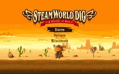
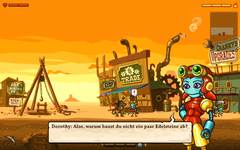
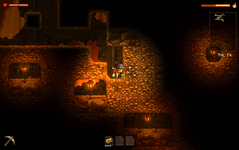
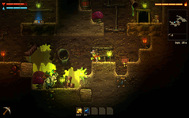
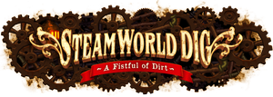

SteamWorld Dig
Dieser Artikel wurde für die folgenden Ubuntu-Versionen getestet:
Ubuntu 14.04 Trusty Tahr
Zum Verständnis dieses Artikels sind folgende Seiten hilfreich:
Im Jump-'n'-Run-Abenteuer SteamWorld Dig  schlüpft der Spieler in die Rolle des dampfbetriebenen Roboters Rusty und gräbt sich auf der Suche nach Reichtümern durch die Bergwerke der alten Western-Stadt Tumbleton. Echte Glücksritter schlagen Pfade durch das Gestein, nehmen den Kampf mit den zahlreichen Untergrundmonstern auf, frischen unterwegs ihre Kohlevorräte auf, um die Stollen belichten zu können, und entkommen mit den richtigen Werkzeugen selbst aus ausweglos erscheinenden Situationen.
schlüpft der Spieler in die Rolle des dampfbetriebenen Roboters Rusty und gräbt sich auf der Suche nach Reichtümern durch die Bergwerke der alten Western-Stadt Tumbleton. Echte Glücksritter schlagen Pfade durch das Gestein, nehmen den Kampf mit den zahlreichen Untergrundmonstern auf, frischen unterwegs ihre Kohlevorräte auf, um die Stollen belichten zu können, und entkommen mit den richtigen Werkzeugen selbst aus ausweglos erscheinenden Situationen.
Installation¶
Vorbereitung¶
Das folgende Paket muss sowohl auf 32-Bit- als auch auf 64-Bit-Systemen installiert [1] werden:
libopenal1:i386 (32-Bit-Paket)
 mit apturl
mit apturl
Paketliste zum Kopieren:
sudo apt-get install libopenal1:i386
sudo aptitude install libopenal1:i386
Außerdem ist ein Grafiktreiber mit 3D-Beschleunigung erforderlich.
64-Bit-Architektur¶
Benutzer eines 64-Bit-Systems müssen zusätzlich einige 32-Bit-Bibliotheken installieren [1]:
|  |  |  |  |
| Spiel-Menü | Als Schürfer stößt man … | … in den Minen auf Edelsteine … | … und ähnlich haltbare Schätze! |
lib32z1:i386 (32-Bit-Paket)
libc6:i386 (32-Bit-Paket)
libgcc1:i386 (32-Bit-Paket)
libstdc++6:i386 (32-Bit-Paket)
libx11-6:i386 (32-Bit-Paket)
libxau6:i386 (32-Bit-Paket)
libxcb1:i386 (32-Bit-Paket)
libxdmcp6:i386 (32-Bit-Paket)
libxext6:i386 (32-Bit-Paket)
mit apturl
Paketliste zum Kopieren:
sudo apt-get install lib32z1:i386 libc6:i386 libgcc1:i386 libstdc++6:i386 libx11-6:i386 libxau6:i386 libxcb1:i386 libxdmcp6:i386 libxext6:i386
sudo aptitude install lib32z1:i386 libc6:i386 libgcc1:i386 libstdc++6:i386 libx11-6:i386 libxau6:i386 libxcb1:i386 libxdmcp6:i386 libxext6:i386
Außerdem muss das Paket libgl1-mesa-glx:i386 installiert werden:
libgl1-mesa-glx:i386 (32-Bit-Paket)
mit apturl
Paketliste zum Kopieren:
sudo apt-get install libgl1-mesa-glx:i386
sudo aptitude install libgl1-mesa-glx:i386
Achtung!
Nutzer von Long Term Support-Versionen wie Ubuntu 12.04 müssen beachten, dass das Paket libgl1-mesa-glx:i386 passend zum möglicherweise verwendeten LTS Enablement Stack gewählt werden muss. Bei Benutzung von Ubuntu 12.04.4 heißt das gesuchte Paket beispielsweise libgl1-mesa-glx-lts-saucy:i386. Weitere Informationen zur Problematik gibt der Artikel LTS Enablement Stacks.
Spieldateien beziehen¶
Das Spiel kann als Download bei Steam oder im Humble Store erworben werden.
Entscheidet man sich für den Kauf im Humble Store, erhält man ein *.tar.gz-Archiv und entpackt [2] den darin enthaltenen Ordner in ein beliebiges Verzeichnis, vorzugsweise in ein Verzeichnis wie ~/Spiele. Im Ordner befindet sich die Datei install.sh, die man nun ausführt [3] und damit die Programmstarter erzeugt.
Einstellungen¶
Fenster- und Vollbildmodus¶
Standardmäßig wird der Vollbildmodus benutzt. Obwohl das Spielmenü keinen Wechsel zwischen Vollbild- und Fenstermodus zulässt, kann man die Konfigurationsdatei entsprechend anpassen. Das Spiel muss dafür mindestens einmal gestartet und wieder beendet worden sein, um die Konfigurationsdatei zu erstellen.
Mit einem Texteditor [4] wird die Datei ~/.local/share/SteamWorldDig/settings.xml geöffnet und nach der folgenden Zeile gesucht:
<Setting Key="Screen.Fullscreen" Value="1" />
Die farblich markierte Ziffer kann entweder 1 für Vollbildmodus oder 0 für Fenstermodus sein. Man verändert diesen Wert entsprechend und speichert die Datei.
Auflösung¶
Zunächst öffnet man die Datei ~/.local/share/SteamWorldDig/settings.xml mit einem Texteditor [4]. Wenn die Datei nicht existiert, startet und beendet man das Spiel einmal, damit sie angelegt wird. Wenn man die Auflösung im Vollbildmodus verändern möchte, sucht man nach folgender Zeile:
<Setting Key="Screen.FullscreenSize" Value="desktop" />
Für die Auflösung im Fenstermodus ist diese Zeile zuständig:
<Setting Key="Screen.WindowSize" Value="960;540" />
Die farblich markierten Werte können entweder eine mit einem Semikolon getrennte Auflösung aus X- und Y-Wert oder das Schlüsselwort desktop sein, das für die verwendete Bildschirmauflösung steht. Auch unübliche Auflösungen sind erlaubt, da die Grafiken skaliert werden. Diesen Wert passt man seinen Wünschen an und speichert die Datei.
Steuerung¶
| Tastenkürzel | |
| Taste(n) | Funktion |
 | Steuerung |
| ↑ | Ansprechen/Benutzen |
| A | Angreifen/Schürfen |
| S | Werkzeug benutzen |
| 1 | Waffe 1 |
| 2 | Waffe 2 |
| 3 | Waffe 3 |
| Q | Nächste Waffe |
| W | Nächstes Werkzeug |
| Springen | |
| Tab ⇆ | Inventar |
| X | Verwerfen |
| Esc | Menü |
Problembehebung¶
Controller funktioniert nicht¶
Obwohl sich das Spiel grundsätzlich sehr gut mit Controllern bedienen lässt und Xbox-360-Controller in der Regel problemlos funktionieren, werden Playstation- und vergleichbare Controller nicht immer erkannt. In diesem Fall kann man mit Programmen wie joy2key die Tasten des Controllers auf die Tastatursteuerung des Spiels mappen.
Ein vergleichbares Programm ist AntiMicro, für welches bereits ein Profil  heruntergeladen werden kann.
heruntergeladen werden kann.
Hinweis!
Fremdpakete können das System gefährden.
Anmerkung: Auf der Projektseite von AntiMicro können zur Architektur passende DEB-Pakete für Ubuntu oder der Quellcode heruntergeladen werden.

Infobox¶
| SteamWorld Dig | |
| Genre: | Jump ’n’ Run |
| Sprache: |         |
| Veröffentlichung: | 05.12.2013 |
| Entwickler: | Image & Form |
| Systemvoraussetzungen: | Empfohlen: 80 MB Festplattenspeicher, 2 GHz-Prozessor, 256 MB Ram, Grafikkarte mit 256 MB Videospeicher, OpenAL-kompatible Soundkarte |
| Medien: | Download |
| Läuft mit: | nativ |

- Erstellt mit Inyoka
-
 2004 – 2017 ubuntuusers.de • Einige Rechte vorbehalten
2004 – 2017 ubuntuusers.de • Einige Rechte vorbehalten
Lizenz • Kontakt • Datenschutz • Impressum • Serverstatus -
Serverhousing gespendet von